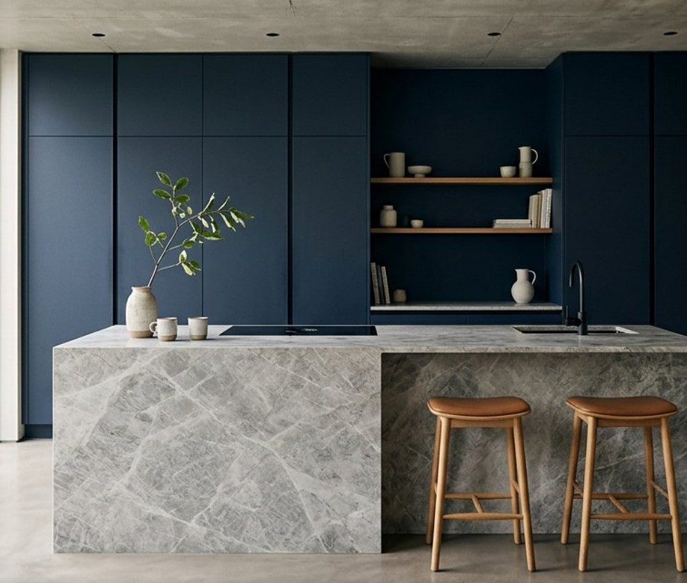

پروفیلProfile
فریم آلومینیومی با تلورانس زیر یک میلیمتر.An aluminium frame, tolerance under one millimetre.

۰۱ — مجموعهها01 — Collections
سیستم بدون دستگیره، صفحه سنگ، و جزئیاتی که بعد از سالها هنوز بسته میمانند.A handleless system, stone worktops, and details that still close years later.
آشپزخانه لایکو از پروفیل آلومینیوم و درِ لاک مات ساخته میشود. درزها همترازند، دستگیره حذف شده، و صفحه سنگ تا کف جزیره ادامه پیدا میکند.A Laico kitchen is built from aluminium profiles and matte-lacquer doors. Joints sit flush, handles disappear, and the stone continues down the island.
پلان، نور، و مسیر کار پیش از انتخاب رنگ بسته میشود. رنگ، آخرین تصمیم است؛ ساخت، اولین تعهد.Plan, light, and the working path are settled before colour. Colour is the last decision. Making is the first commitment.
فریم آلومینیومی با تلورانس زیر یک میلیمتر.An aluminium frame, tolerance under one millimetre.
سنگ طبیعی یا گرس پرسلان، لبه تمامشده در کارگاه.Natural stone or gres porcelain, edges finished in the workshop.
لولای آرامبند و ریل فول بلوم، بیصدا.Soft-close hinges and Blum full-extension runners, quiet.